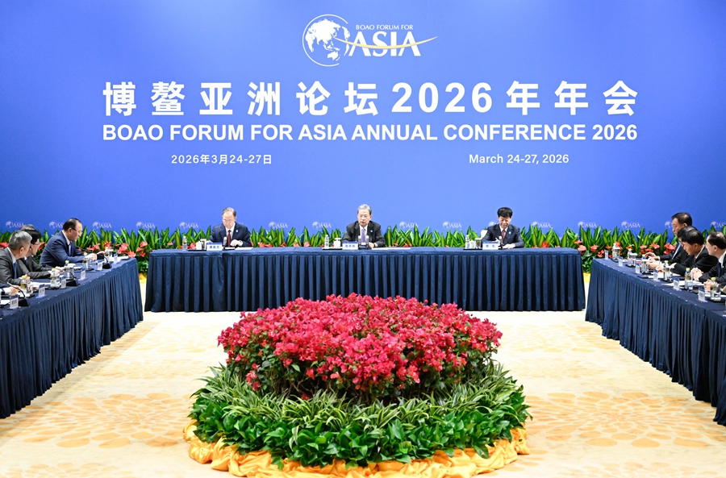
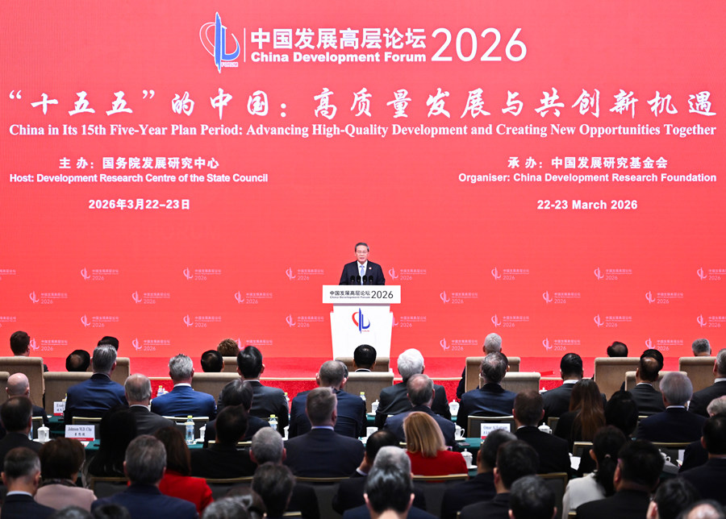
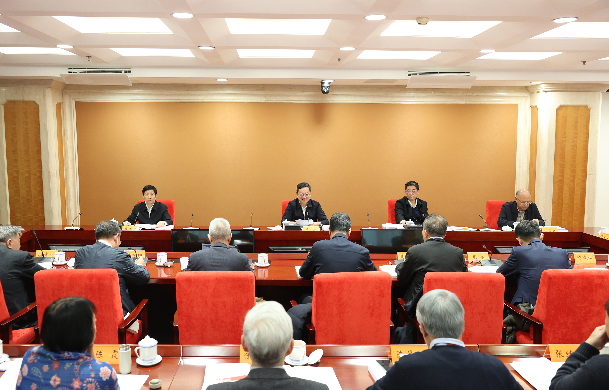
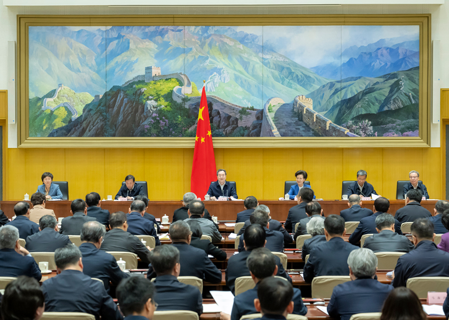
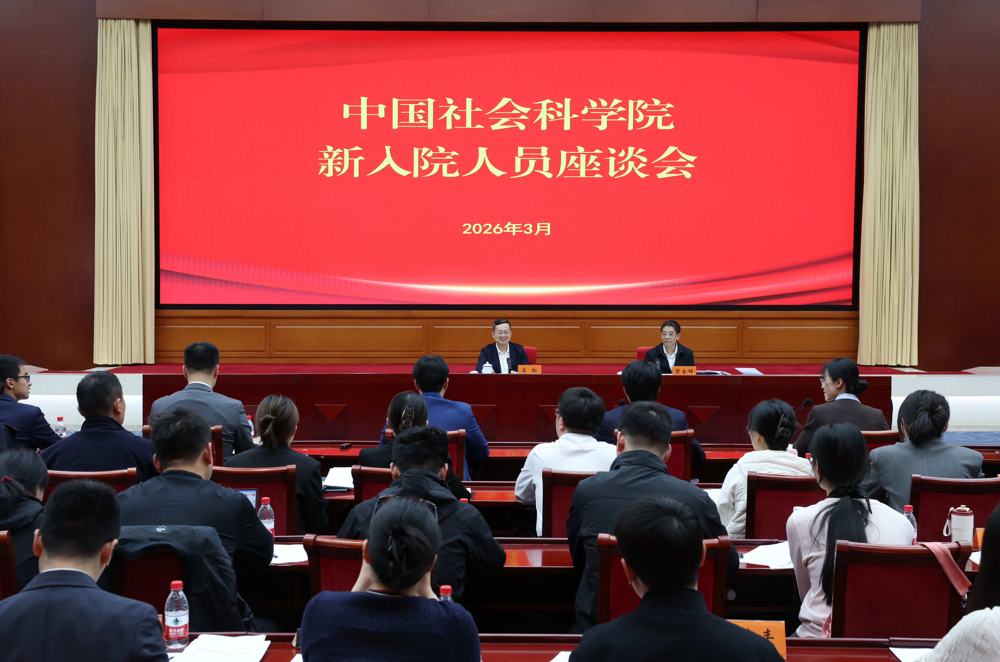
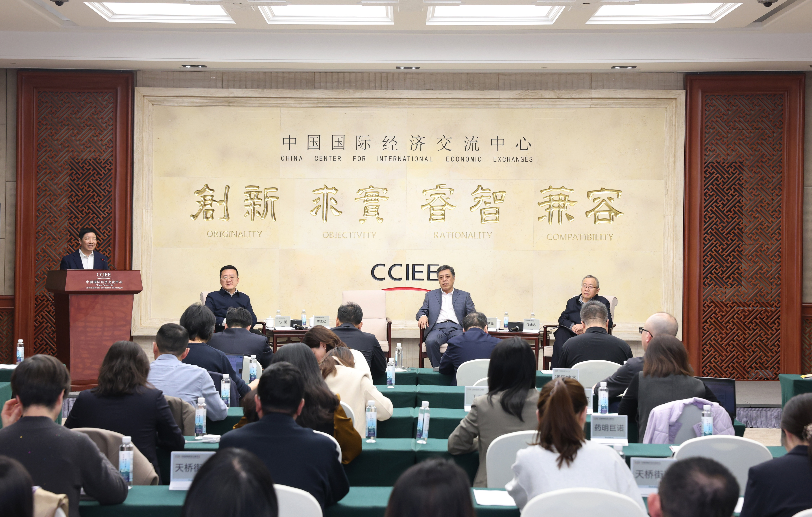
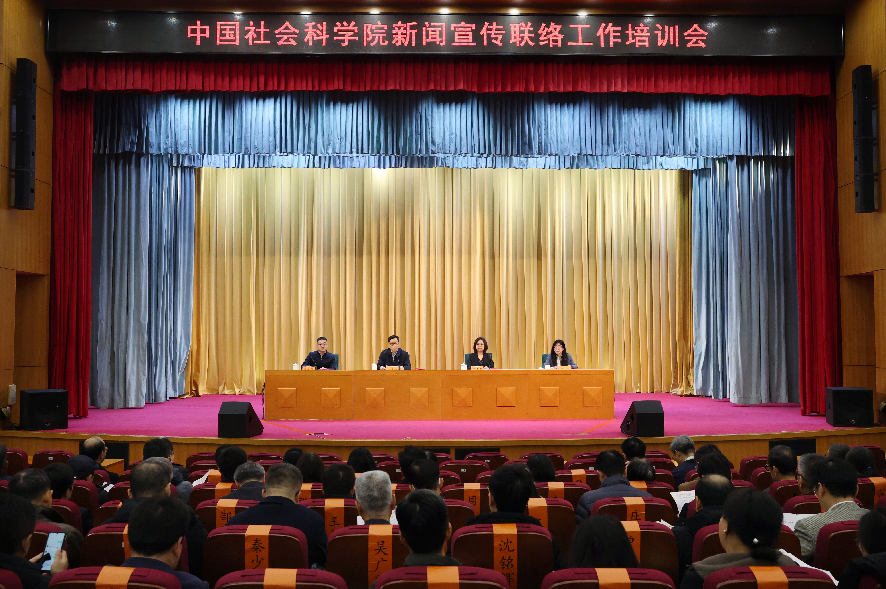
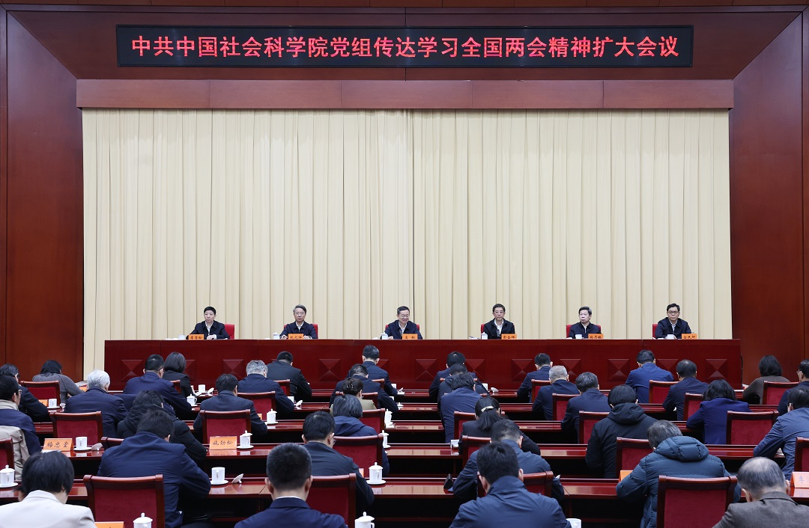
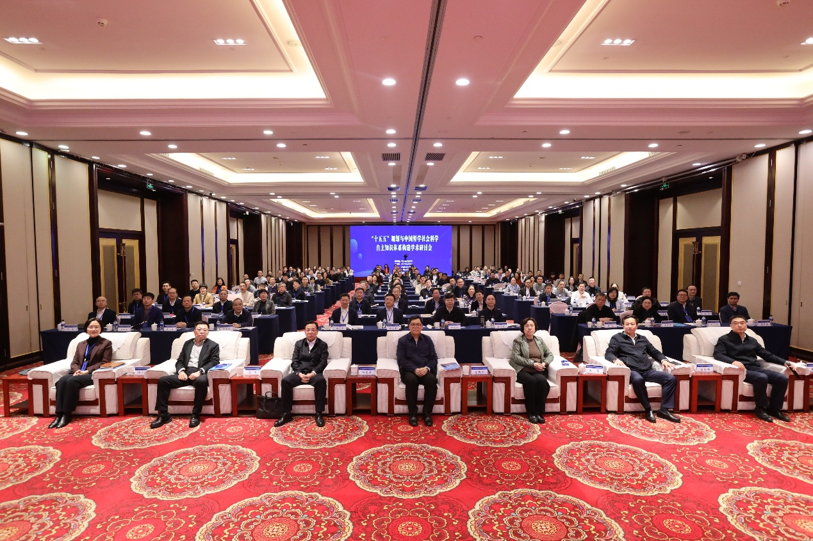

机构简介
中国社会科学院-学术交流与合作学部：学术交流与合作学部是中国社会科学院下设的重要业务机构，主要负责统筹推进全院国内外学术交流与国际合作工作，组织开展高水平学术论坛、国际会议与智库对话，推动学术成果国际传播与合作研究平台建设。
学部依托中国社会科学院综合研究优势与高端智库资源，围绕全球治理、区域发展与人文交流等重点领域，搭建多层次学术合作网络，促进中外学者深度交流与协同研究，不断提升中国哲学社会科学的国际影响力与话语权。
About the Division: The Division of Academic Exchange and Cooperation is a key unit under the Chinese Academy of Social Sciences (CASS), responsible for coordinating domestic and international academic exchange, organizing high-level forums and international conferences, and promoting global research collaboration and academic dissemination.
Leveraging the comprehensive research strengths and think tank resources of CASS, the Division focuses on global governance, regional development, and cultural exchange, fostering multi-level academic cooperation networks and enhancing the international impact of Chinese scholarship.
联系方式 | Contact
- 地址：北京市东城区建国门内大街5号（中国社会科学院）
- Email：info@cssna.org.cn


学部概况
学术交流与合作学部是中国社会科学院专门负责国内外学术交流、国际合作、智库对话与学术传播的核心机构，是国家哲学社会科学走向世界的重要窗口。
学部立足中国特色哲学社会科学体系，整合全院优质学术资源，推动中外学术机构、高校、智库、专家学者开展多层次、宽领域、高水平交流合作，助力提升国家文化软实力与国际话语权。
学部始终坚持开放、包容、合作、共赢的理念，服务国家对外开放大局，构建全球化学术合作网络，为推动文明交流互鉴、构建人类命运共同体贡献智慧与力量。
核心职能
- 统筹全院国内外学术交流规划，制定合作发展战略
- 组织举办国际学术论坛、研讨会、高端对话与文化交流活动
- 推动与世界各国知名大学、科研机构、智库建立长期稳定合作关系
- 管理海外学术平台、合作项目与联合研究中心
- 支持学术成果国际传播、著作外译与期刊国际化
- 开展学术外交与政策沟通，服务国家重大战略需求
- 培养具有国际视野的高水平青年学术人才

交流活动
选用新华社等主流媒体公开新闻图片，更贴近国内机构官网常见的信息展示风格。

论坛会议与专题研讨
围绕重点议题组织论坛、研讨会与学术交流活动，强化学界、智库与研究机构之间的高水平对话。

国际合作与会议平台
依托高层次论坛、国际会议与合作平台，持续拓展与高校、科研机构和智库之间的交流合作网络。

成果发布与活动展示
围绕研究报告、专题成果和重点活动开展发布与展示，增强学术成果传播的专业性与规范性。
要闻动态

2026年学术交流与合作重点工作部署会议在京召开
会议围绕年度重点任务、国际合作平台建设、成果传播机制完善和青年学者培养等方向进行系统部署，强调持续提升学术交流工作的规范化、机制化和国际化水平。

国际比较研究专题研讨会顺利举行 多国学者参与
来自高校、智库和研究机构的专家围绕区域合作、全球治理与比较研究方法等议题展开深入讨论，进一步拓展了多边学术交流与联合研究的合作空间。
中国社会科学院与多家海外智库签署合作备忘录
围绕长期合作机制、联合课题组织、学术互访与成果发布等内容，相关机构进一步明确了合作方向，为后续高层次学术协同奠定了良好基础。

新闻动态
- 新华网时政频道：权威国内时政与重要会议报道 来源：新华网
- 新华网国际要闻：国际局势与全球合作动态 来源：新华网
- 人民网教育频道：高校、学术与青年发展资讯 来源：人民网
- 光明网学术频道：学术前沿、论文研究与会议动态 来源：光明网
- 光明网理论学术动态导读：最新理论与学术观察 来源：光明网
- 中国社会科学院新闻与传播研究网：学术前沿与专题内容 来源：中国社会科学院
- 中国社会科学院大学新闻传播学院：学院资讯与讲座通知 来源：中国社会科学院
- 新华网北京频道：首都重要活动与学术论坛资讯 来源：新华网
- 新华网长三角频道：区域协同发展与创新合作信息 来源：新华网
- 中国日报智库频道：国际传播与智库观察 来源：中国日报

重点合作项目
围绕全球治理、区域发展、文化交流等重点方向，推进多项国际合作研究与交流项目。
- “全球治理与多边合作机制”联合研究项目（2024–2026）
- 中欧智库合作与政策对话平台建设项目
- “一带一路”区域研究与学术网络协同计划
- 国际青年学者联合培养与交流项目
- 中国学术成果国际传播与外译支持项目
学术成果
学部依托广泛国际合作网络，产出大量具有国际影响力的学术成果，包括研究报告、学术著作、政策建议、国际论文等，为国家决策与国际学术发展提供重要支撑。
近年来，学部推动数十部重要学术著作外译出版，在全球多个国家举办成果发布会；组织完成上百项国际合作研究课题，覆盖全球治理、经济发展、文化交流、国家安全、区域研究等重要领域。
学部主办的国际学术论坛已成为全球人文社科领域重要交流平台，多项研究成果被国际机构、海外智库与主流媒体引用，有效提升了中国学术的国际影响力与话语权。
重点工作
围绕学术交流、智库合作、国际传播与人才培养，形成多维度协同推进的工作格局。
-
高端论坛组织
统筹国内外高水平学术论坛、专题会议与闭门研讨，服务重大议题研究和学术成果转化。
-
智库合作网络
推动与高校、科研机构、智库和区域研究中心开展长期合作，形成稳定的研究协作机制。
-
国际传播能力建设
支持学术成果外译出版、国际期刊合作、专题宣传与海外发布，提升中国学术国际可见度。
-
青年学者培养
通过研修计划、联合项目、海外交流与学术训练，提升青年研究人才的国际视野与表达能力。
联系与服务
- 办公地址：北京市东城区建国门内大街5号（中国社会科学院）
- 电子邮箱：info@cssna.org.cn
- 服务方向：学术论坛、国际合作、智库交流、成果传播
- 工作机制：项目统筹、活动组织、专题联络、合作对接